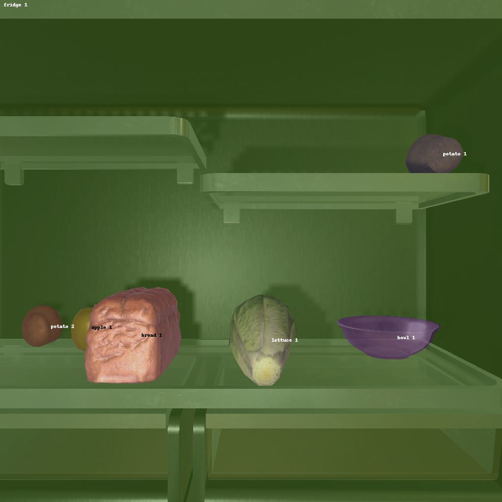

---------------------------------------------------------task: 22---------------------------------------------------------
--------------------------------------------------------------------------------------------------------------------------------------------------------------------
--------------------------------------------------------------------------------------------------------------------------------------------------------------------
Step:--------------------------------------------------------------------------8-------------------------------------------------------------------------------
----------------------------------------
VLM Prompt:
Image1:
Image2:
Image3:
**Instruction**
1. Analyze the provided image to identify all visible household objects, focusing on those relevant to the task description "heat some egg and put it in countertop."
2. Use the analysis of the image and the task hint "The agent must find an object of the desired type, pick it up, go to a microwave, heat the object with the microwave, then find the correct location to place it, and put it down there. The agent does not need to use the microwave button or open the microwave to heat the object, and the agent just needs to do action that is "heat the object with the microwave"." to answer the question: what is the most reasonable action in the choices for the task description "heat some egg and put it in countertop"?
4. Decide and write the answer using the template: The answer is: (i): , where i is the real number. If there is no desired object in the image, search every place based on **Initial Observation** to find the object. And if no one is exactly correct, choose a similar answer.
**Initial Observation**
You are in the middle of a room. Looking quickly around you, you can see cabinet (1-18), countertop (1-4), sink (1), drawer (1-7), sinkbasin (1), coffeemachine (1), microwave (1), garbagecan (1), stoveburner (1-4), toaster (1), fridge (1)
**Answer Choices**
(1): go to cabinet 1
(2): go to cabinet 2
(3): go to countertop 1
(4): go to cabinet 3
(5): go to cabinet 4
(6): go to cabinet 5
(7): go to sink 1
(8): go to cabinet 6
(9): go to drawer 1
(10): go to drawer 2
(11): go to sinkbasin 1
(12): go to cabinet 7
(13): go to cabinet 8
(14): go to coffeemachine 1
(15): go to microwave 1
(16): go to cabinet 9
(17): go to countertop 2
(18): go to cabinet 10
(19): go to drawer 3
(20): go to drawer 4
(21): go to garbagecan 1
(22): go to drawer 5
(23): go to cabinet 11
(24): go to cabinet 12
(25): go to cabinet 13
(26): go to cabinet 14
(27): go to stoveburner 1
(28): go to countertop 3
(29): go to stoveburner 2
(30): go to stoveburner 3
(31): go to stoveburner 4
(32): go to drawer 6
(33): go to cabinet 15
(34): go to cabinet 16
(35): go to cabinet 17
(36): go to cabinet 18
(37): go to toaster 1
(38): go to drawer 7
(39): go to countertop 4
(40): close fridge 1
(41): take bread 1 from fridge 1
(42): take lettuce 1 from fridge 1
(43): take bowl 1 from fridge 1
(44): take potato 1 from fridge 1
(45): take potato 2 from fridge 1
(46): take apple 1 from fridge 1
**Answer**
Let's think step by step by following the instructions.
----------------------------------------
----------------------------------------
Original Response:
The task description is "heat some egg and put it in countertop." As per the initial observation, I'm in the middle of a room with various household objects around, including a microwave which is essential for heating.
Analyzing the provided images, we can see that there are no eggs visible in the fridge or on the shelves. Therefore, we must search other places to find the egg. Based on the initial observation, the egg could potentially be stored in a cabinet or a drawer, as these are common storage places for eggs in a kitchen.
Given the answer choices, the most reasonable action to find an egg would be to check the cabinets or drawers. There is no direct action to "take egg" in the choices, so we must choose the next logical step which is to search for the egg. Out of the available options, the action that most closely aligns with searching for an egg would be to go to a cabinet or drawer.
The answer is: (1): go to cabinet 1.
----------------------------------------
----------------------------------------
>>> Refine Original VLM Response and Get Pure Action: go to cabinet 1
----------------------------------------
-----------------------------------------------------------------
Running time: 11.9559006690979 seconds
Total Money: 14.090490000000006
-----------------------------------------------------------------
-----------------------------------------------------------------
Text Observation:You arrive at loc 0. The cabinet 1 is closed.
-----------------------------------------------------------------
UNSUCCEED